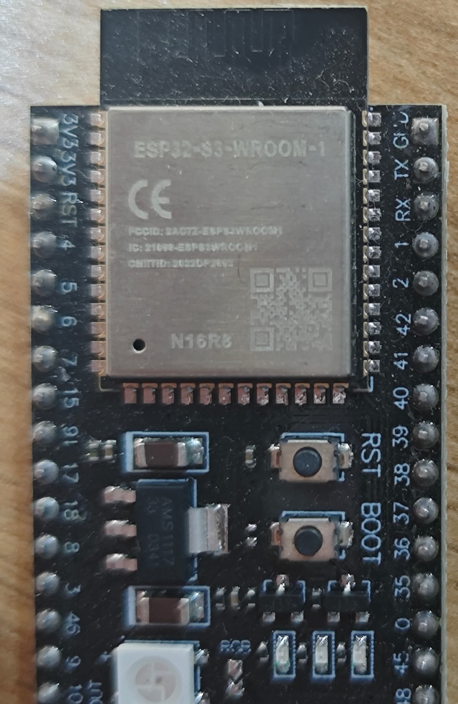

Место 1
ESP32-S3-WROOM-1 N16R8
Оптимальный выбор- Ядро
- 2 × Xtensa LX7, 240 МГц
- ОЗУ
- 512 КБ + 8 МБ PSRAM
- Flash
- 16 МБ
- Связь
- Wi-Fi 2,4 ГГц, Bluetooth LE 5
Маркировка N16R8 на крышке модуля означает 16 МБ flash и 8 МБ PSRAM. Памяти хватает на HTTP, TLS, MQTT, JSON и экран одновременно. Это самая отлаженная платформа nanoFramework.
Прошивка nanoFramework: ESP32_S3_OCTAL